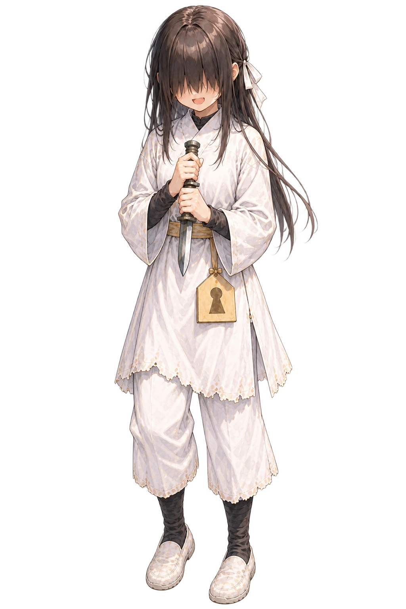
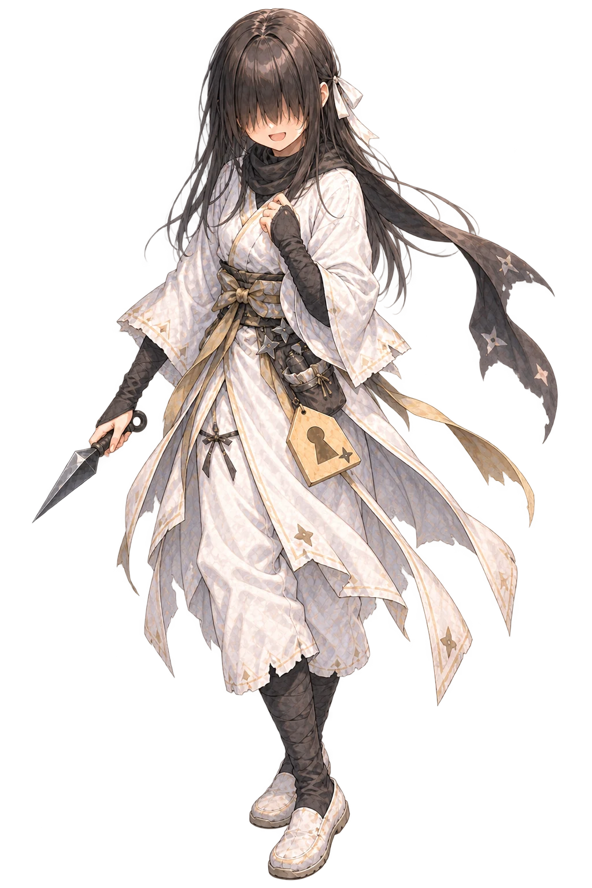
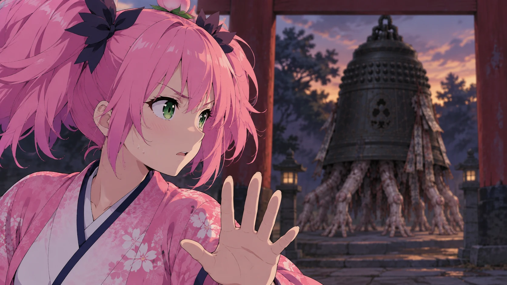
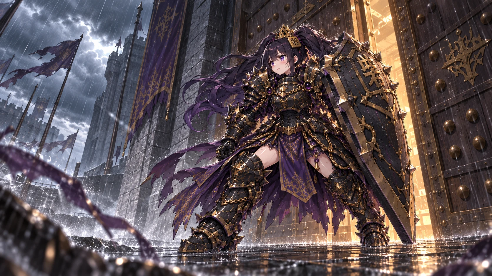
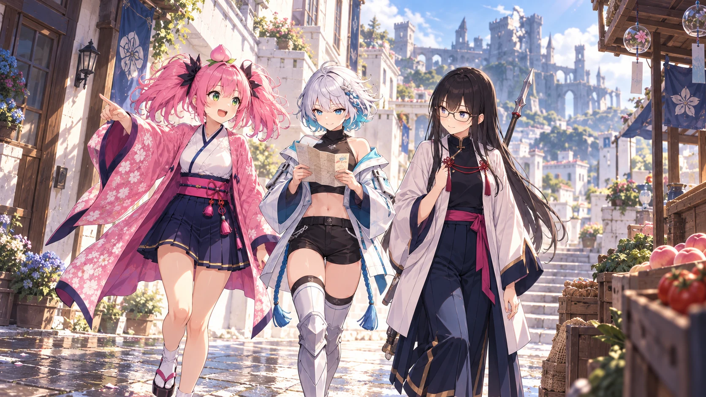
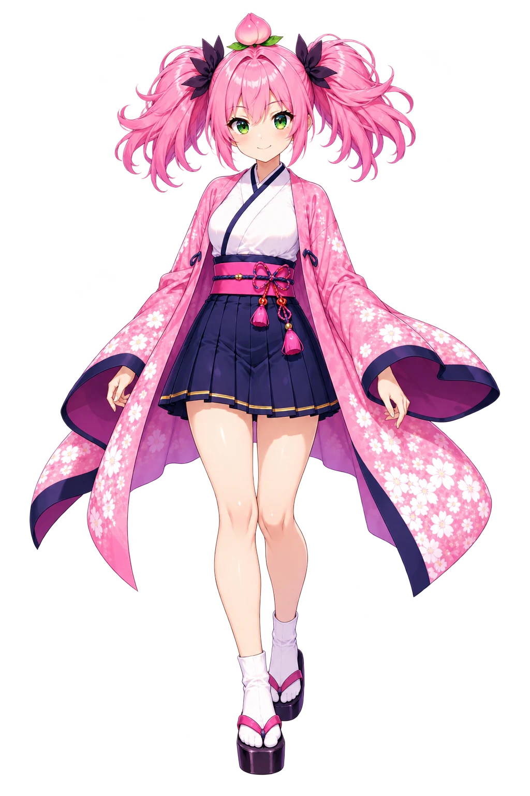
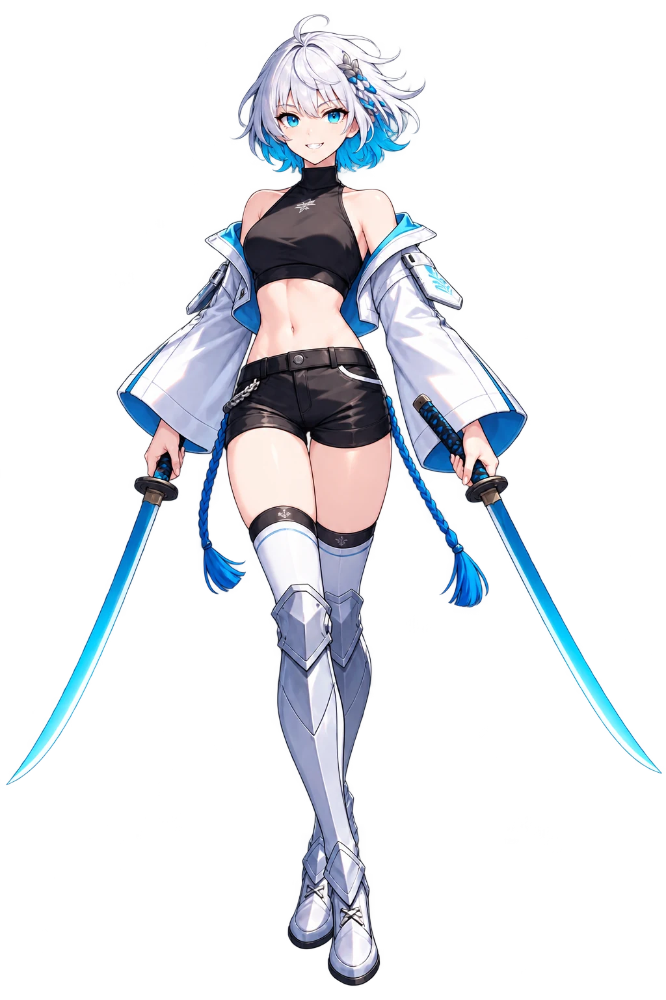

01 / EVOLUTION
その歩を、何に育てる？
溜まったコストで、歩を忍や盾へ。
次に必要な戦力を、盤上で作る。

壱 ABOUT THE GAME
歩が忍や盾に進化し、
盤面の条件で、戦姫の姿も変わる。
桃姫と仲間たちの旅を描く、
9×9将棋ベースの、物語のある対局ゲーム。


01 / EVOLUTION
溜まったコストで、歩を忍や盾へ。
次に必要な戦力を、盤上で作る。

02 / TRANSFORMATION
味方の駒や配置が、変化の鍵。
目指す姿へ、陣形を整える。

03 / STORY
買い出しも、稽古も、食卓も。
盤を離れた仲間にも会える。
掲載画像は世界観アート・キャラクターイラストです。
弐 CHARACTERS

主人公
寄り道も、仲間も、置いていけない。
桃が好きで、仲間が好き。
戦場では、仲間を率いて前に立つ。

仲間
考えるより先に、刃が走る。
二刀を携え、真っ先に前へ。
勢いのよさで、仲間を振り回すことも。
参 WORLD MOVIE
桃姫と、異形の禍者。
開発用の世界観映像です。再生ボタンからご覧いただけます。
DEVELOPMENT FOOTAGE / YOUTUBE実際の対局は、開発映像で。公開中の「AI vs CPU」対局を見る